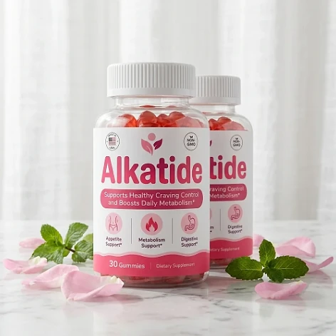
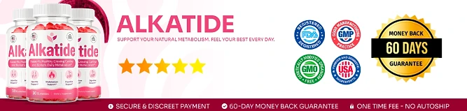

What Is Alkatide And How Does It Work?
Alkatide is a dietary supplement in gummy form designed to support healthy craving control, daily metabolism, and digestion for adults who want to address the constant cravings, low energy, and slow progress that can make weight goals feel out of reach through a natural, dependable approach — without complicated routines or temporary quick fixes.
It utilizes a simple daily gummy built around 250 mg of Apple Cider Vinegar, in a base made with Pectin and Citric Acid, to support appetite, metabolism, and digestive comfort, helping the body maintain its natural balance throughout the day.
The ingredients in Alkatide are familiar, food-derived components that, according to the official website, work on three fronts — cravings for sweets, daily metabolism, and digestive efficiency — particularly for adults who prefer one simple gummy a day over multiple products or complicated plans.
Rather than acting as a short-lived artificial fix, Alkatide focuses on a steady, routine-based approach, working gradually alongside daily habits to help maintain satiety between meals, craving control, and long-term wellness.
With consistent daily use, many users report fewer cravings during the day, steadier energy, and a gradual sense of control over their eating habits, especially when combined with a balanced diet, good sleep, and regular exercise.
From a practical standpoint, Alkatide is a daily apple cider vinegar gummy for appetite and metabolism support designed to support wellness from within — helping you stay active, energized, and in control of your health.
Manufactured in the USA with globally sourced ingredients, according to the product label, Alkatide is designed for regular daily use, focusing on safety, purity, and quality for those seeking a natural, non-prescription route to healthy weight management.
Alkatide Ingredients
Every gummy of Alkatide contains one active ingredient on the Supplement Facts panel, 250 mg of Apple Cider Vinegar, and the official website highlights two more components of the gummy that are chosen to support appetite, metabolism, and digestion as part of a consistent daily routine:
Apple Cider Vinegar (250 mg): The main ingredient of the formula, a fermented apple product traditionally used to support metabolism and appetite control and, according to the official website, included to help the body use energy more efficiently.
Pectin: A natural fruit fiber that gives the gummy its texture and is described on the official website as included to support digestion and feelings of fullness. It appears on the label under other ingredients.
Citric Acid: A compound naturally found in citrus fruits that the official website associates with metabolic and digestive support. It also appears on the label under other ingredients.
Together, these ingredients work synergistically to support craving control, satiety, and healthy weight management from within. The other ingredients on the label are cane sugar, glucose syrup, water, sodium citrate, natural flavor, natural coloring, and starch, with 6 calories and 1.5 g of sugars per gummy, and the label carries a Non-GMO seal.
Alkatide is designed for daily use, offering a natural, non-prescription approach to supporting metabolism and appetite, without complicated routines or aggressive synthetic compounds.
Alkatide Side Effects
Alkatide is generally considered well tolerated and is designed for adults of different ages and lifestyles who are looking for a safe, natural, and balanced approach to weight management, especially those who prefer an easy one-gummy daily routine to support appetite, metabolism, and well-being without resorting to risky solutions with severe side effects.
All ingredients used in Alkatide are described on the official website as high-quality, natural components with no harmful chemical additives, and Alkatide is manufactured in the USA with globally sourced ingredients, according to the product label, reinforcing consistency, safety, and reliability.
With no widespread reports of serious side effects, Alkatide is generally considered a well-tolerated option. Because apple cider vinegar is acidic, people with a sensitive stomach or acid reflux may prefer to start with caution, and anyone who takes medication to manage blood sugar should speak with their doctor first. It is not intended to diagnose, treat, cure, or prevent any disease, and individual results may vary.
According to the label, pregnant or nursing mothers, children under the age of 18, and individuals with a known medical condition should consult a physician before using Alkatide. The same applies to anyone taking prescription medications, ensuring it fits safely within their personal wellness plan.
Alkatide Dosage
The recommended Alkatide dosage is one gummy a day with an 8 oz. glass of water, and it is designed to fit easily into a daily routine, making consistency simple and convenient. Formulated as an easy chewable gummy, it requires no powders to mix, no vinegar drinks to prepare, and no capsules to swallow.
The recommended approach, as printed on the label, is to take one Alkatide gummy once a day. For best results, the label suggests taking Alkatide 20 to 30 minutes before a meal, at the same time each day, or as directed by your healthcare professional, which allows its ingredients to work consistently.
For best results, consistency is key. Each bottle contains 30 gummies, a one-month supply, and because nutritional support for appetite and metabolism builds gradually, many customers make it part of an ongoing wellness routine.
There is no need for complex schedules or multi-step routines. One simple daily gummy is designed to build lasting support gradually alongside a balanced diet, good sleep, and an active lifestyle. The label also advises storing the bottle in a cool, dry place away from heat and light.
As with any dietary supplement, it's important not to exceed the recommended dose and to check the label on your bottle. Alkatide works best when used regularly, combined with proper hydration, balanced nutrition, and healthy daily habits.
Alkatide – Refund Policy
You can order Alkatide with confidence, knowing that every purchase is protected by a 60-day guarantee from the date of purchase. This allows you to try the formula and decide if it delivers the support you expect.
According to the refund policy on the official website, refund requests can be made after a minimum trial period of 30 days and must be started within 60 days of the purchase date. Only sealed bottles are eligible, shipping and customs fees are not refunded, return shipping is paid by the customer, and a 20% restocking fee is deducted.
How the refund process works: If you decide Alkatide is not right for you, email customer support to request a return authorization code, then follow the return instructions provided. Once the returned items are received and verified, your refund will be issued to the original payment method, and you will receive a confirmation email.
Customer Support Contact Information: contact@customercs.com or +1 (507) 448-8190, as printed on the product label. The team typically replies to emails within 48 business hours.
Refund Processing Time: After your refund is processed, it may take 5 to 10 business days to appear on your statement, depending on your financial institution.
This refund policy is designed to give customers a clear and transparent experience when trying Alkatide.
Alkatide Customer Reviews
-
Michael Thompson — Houston, TXVerified Purchase – 6 Bottles
“I struggled with excess weight for years, which really affected my self-esteem. After using AlkaTide for 3 months, I am now able to lose weight and keep my body in shape. It has revitalized my life and given me a new confidence.”
-
Sarah Rodriguez — Chicago, ILVerified Purchase – 6 Bottles
“... I often struggled with losing weight and managing my blood sugar. AlkaTide has been a game-changer for me. After just 1 month of use, I noticed significant improvements in my metabolism and overall health. I feel like I’ve regained my energy!”
-
Lauren Rio — Seattle, WAVerified Purchase – 6 Bottles
“After menopause, I experienced severe weight gain and struggled to shed it. I thought my days of having a healthy body were over until I discovered AlkaTide. After using it for 2 months, I’m now able to enjoy an active life and feel good about myself again. It has truly been a life-changing product.”
Alkatide – Where To Buy
Alkatide is sold through its official website, so if you decide to try it, it's important to be careful about where you purchase it. The official website is the only sales channel the manufacturer lists, and it does not point to marketplaces such as Amazon, eBay, or Walmart.
Listings on third-party platforms may look similar but cannot be verified as authentic, raising concerns about safety, quality, and ingredient freshness. Products purchased outside the official source may not be covered by the 60-day guarantee.
For this reason, most customers recommend purchasing Alkatide only through the official website. Buying directly from the official source ensures you receive the authentic original product, manufactured in the USA, with access to customer support and the full guarantee. According to the official website, every purchase is a one-time order, with no automatic renewals, hidden fees, or surprise charges.
To avoid counterfeit batches and ensure maximum quality, always verify that you are ordering from the official Alkatide website before completing your purchase.
To ensure you’re getting the authentic product, most users choose to visit the official website.
Is Alkatide A Scam?
Based on what the official website and the product label disclose, Alkatide does not appear to be a scam. It is a real gummy supplement, sold through an established retailer, and formulated to support craving control, metabolism, and digestion as part of a consistent routine.
The ingredients used in Alkatide — Apple Cider Vinegar, Pectin, and Citric Acid — are well known in the wellness field, and the label publishes a full Supplement Facts panel with the amount of apple cider vinegar in each gummy for transparency.
In addition to its simple formula, Alkatide is manufactured in the USA with globally sourced ingredients and carries a Non-GMO seal, according to the product label, with a focus on safety, purity, and consistency.
Many users report fewer cravings and steadier energy throughout the day and an easy daily habit, making Alkatide a practical option for those seeking natural support for weight management. Results vary from person to person, and no supplement replaces a balanced diet, regular exercise, or medical care.
Alkatide is backed by a 60-day guarantee, and orders are one-time purchases with no automatic renewals, recurring charges, or hidden fees. The refund rules, including the sealed-bottle requirement and the restocking fee, are published on the official website, which underscores the manufacturer's transparency with customers.
If you're looking for a simple daily gummy to support appetite, metabolism, and well-being without complicated routines, Alkatide is worth considering — especially when purchased directly from the official website.
For those who want to verify product details or check current availability, the official Alkatide website remains the safest option.

Check Availability On Official Website
